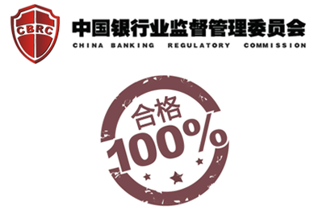
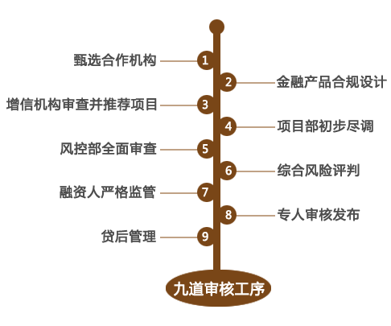
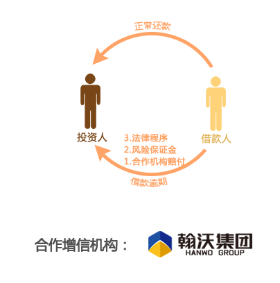
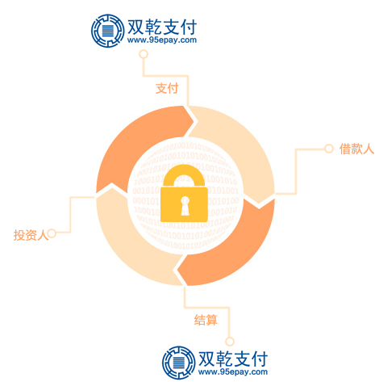
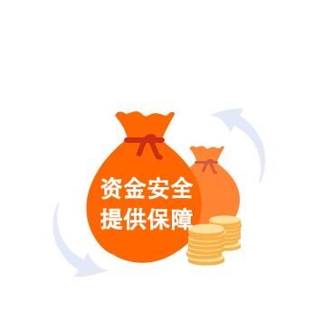

P2P监管主体银监会明确表示，P2P网络借贷平台作为一种新兴金融业态，在鼓励其创新发展的同时，要明确四条边界： 一、是要明确平台的中介性质， 二、是要明确平台本身不得提供担保， 三、是不得将归集资金搞资金池， 四、是不得非法吸收公众资金。 联合金融坚持的“五不”原则，引入双乾第三方托管，绝不碰投资人资金，坚守信息服务定位，完全满足银监会的监管政策，彻底远离P2P四红线。 |
 |
依托联合金融强大的金融合作伙伴，和富有十年金融从业经验的高管团队，以普惠金融为经营目标，以金融产品创新为核心要旨，以金融产品安全为根本底线，兢兢业业，反复验证，不断创造符合市场需求和监管政策的投资类或理财类产品和项目，持续为投资人创造安全稳定的收益。 |
联合金融产品和项目信审流程以风控为根本，对合作保障机构进行严格筛选并对投资项目进行双重审核。联合金融坚持九道审核工序，包括甄选合作机构、金融产品合规设计、增信机构审查并推荐项目、项目部初步尽调、风控部全面审查、综合风险评判、融资人严格监管、专人审核发布、贷后管理，层层剥离您的投资所面临的风险敞口。 |
 |
联合金融坚持“风险隔离”原则和“金融渠道”的定位，不断引入专业金融机构或实力集团企业来专门提供增信，与全国各地的金融机构或准金融机构，包括小额贷款公司、融资租赁公司、证券公司、信托公司、保理公司专业机构建立了战略合作关系。 √ 准入控制及总额控制：根据监管意见设定机构准入和产品准入机制，并设定准入标准。多级评审制度：设立风险控制委员会和项目评审委员会对准入机构和产品多级评审评制度，同时针对各增信机构确定综合授信保额，控制业务总额，并随时跟踪增信金融机构信用水平。 √ 本息全额担保：战略合作金融机构负责筛选和审查项目，平台上每一单融资项目或理财项目均由以上机构提供全额本息担保。 √ 三级增信：一般产品或项目不低于三级增信，切实保障投资人本息安全。 |
 |
|  | 联合金融通过双乾支付提供的支付和结算平台进行结算，投资人与融资人的交易资金通过双钱支付直接完成，联合金融不接触投资人与借款人的资金。确保投资人的资金安全，同时也为联合金融稳定运营提供良好的保障。 √ 合规：双钱支付获得中国人民银行颁发的《支付业务许可证》，系统由央行进行全程业务监管 √ 唯一：同一个身份证号码、手机号只能在同一平台注册一个实名账户，资金进出遵循同名卡原则 √ 密保：用户主动授权的账户才能被商户划扣；客户动用资金时（如取现和交易确认），需验证双乾支付账户密码 √ 即时：投资人的账户资金发生变动时，将发送短信通知用户 √ 监控：双钱支付实时监控每个账户的交易数据，一旦发现异常时，会采取及时响应措施，必要时将锁定账户功能 |
联合金融对不同的产品设计不同的保证金要求，包括担保机构保证金、核心企业保证金等，以便在融资人未能及时履行债务的情形下及时启动代偿。同时，上述保证金由第三方进行监管并接受权威机构审计，实现资金安全的同时为投资人提供有效还款保障。 √ 符合准入条件的增信金融机构根据授信保额缴纳5%-10%的风险保证金； √ 每个融资项目视情况缴纳5%-10%的风险保证金； √ 联合金融平台按融资量和风险水平提取部分拨备金； √ 违约风险金代偿并启动追偿机制； |
 |
联合金融与乐视资本旗下法海网建立P2P平台合同凭证托管业务合作关系，全部电子协议独立托管于法海网。法海网是一家专注于为中小企业提供在线法律服务以及法律综合解决方案的互联网企业。 √ 合同审查：法海网作为独立第三方法律服务平台，组织专门的律师团队对融资项目的相关合同进行审查，确保合同真实存在且签署合法。 √ 证据托管：项目融资完毕后，联合金融会将项目文件移交到法海网，由法海网对与借款事实相关的证据进行托管，包括完整的电子协议、纸质合同原件、借款人身份证明文件、联系方式等等，实现由第三方持有交易证据直至合同履行完毕 √ 维权触发机制：平台非正常关闭后，未履行完毕的合同，法海网可提供相关的证据，作为投资人向融资人主张债权的依据，并在必要情况下协助投资人对接律师来启动法律程序。 |
系统安全：联合金融平台系统采用了高强度加密技术，支持支持SSL 数字安全证书的使用，采用转义HTML元字符以及XSS安全过滤方法，有效防止XSS跨站脚本攻击。系统建了目录安全文件机制,有效保护目录文件安全;，以及数据库优化及备份下载,有效防止数据丢失。系统的自动还款等核心业务写入系统进程运行,多种语言开发确保系统的稳定性。 数据安全：联合金融平台系统对数据库使用MyISAM和InnoDB双引擎处理,大大提高了Mysql数据库的执行效率。同时在核心业务数据操作方面均以事务处理的方式进行,以确保数据的一致性和可靠性。系统后台有内置的数据库备份功能,可以随时对数据库进行远程备份及下载,在发生意外情况时可及时恢复。系统采用阿里云的关系型数据库服RDS，数据存储和运行于云端，应用程序文件和数据库分离，提高平台数据的安全性。 |